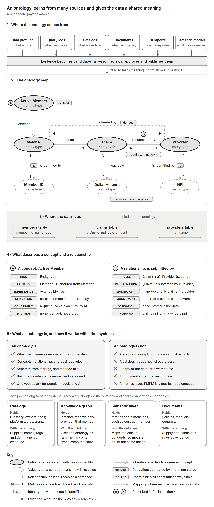
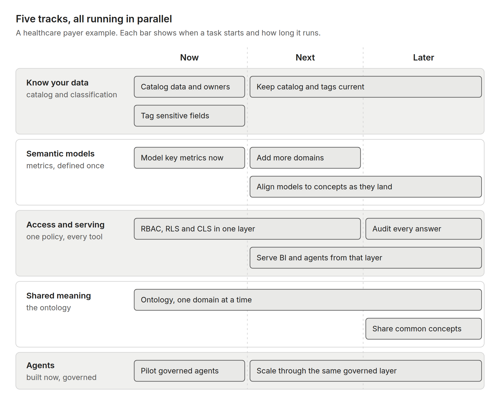

Pragmatic Lakehouse Architecture · Part 3 of a Series
PLA Part 3: Ontology, knowledge graphs, semantic layers and the context layer untangled, with blueprints for building them in parallel instead of waiting for any one to finish
Getting these terms straight matters because the confusion has a cost. Some organizations launch a program to model the entire enterprise before anything else is allowed to move. Others decide that AI will work out the meaning on its own and keep building agents against raw tables. Both paths come from blending ideas that deserve to be kept apart.
These words are used loosely, often interchangeably. Here is what we mean by each, starting with the most familiar and ending with the ontology that ties them together.
Catalogs. Two kinds matter. An enterprise catalog, such as Alation, Collibra or Atlan, is the organization-wide inventory of data: the business glossary, owners, stewards, lineage and sensitivity classifications, across every platform. A platform catalog, such as Databricks Unity Catalog or Snowflake Horizon, governs the tables, permissions and lineage inside one data platform. Together they answer "what do we have, who owns it, and how sensitive is it?" In METAllion™, Copper classifies every field in the enterprise catalog, and platform catalogs enforce those classifications where the data lives.
Example: the enterprise catalog records that the claims team owns claims data and that the diagnosis field holds PHI. The platform catalog enforces who can read that column.
Knowledge graph. A network of real things and the connections between them, stored as data. It answers "who is connected to whom?"
Example: this provider referred that member to a cardiologist, who then submitted three claims.
Semantic layer. Business definitions placed over the data so every tool calculates the same thing the same way. It answers "how is this number calculated?" In the Platinum zone, the semantic layer is one part of the context layer.
Example: paid amount per member per month is defined once, and every dashboard uses that definition.
Context layer. Everything a person or an AI agent needs to answer a question correctly and safely, delivered together at the moment the question is asked. It is what the Virtualize phase produces, as described in Part 2, and the semantic layer is one of its inputs. The difference between the two is easiest to see with a single question.
Example: a care manager asks an AI assistant, "How many of my members had an ER visit last month?"
For that one question, the two layers differ in four ways.
In short, the semantic layer makes the number consistent. The context layer makes the answer safe and explainable.
Ontology. A shared, written-down description of what the business deals in and how those things relate, kept separate from how the data is stored. It answers "what do we mean?" It is the vocabulary the others share: the glossary term in the catalog, the dimension in the semantic model, the node type in the knowledge graph and the word an agent recognizes in a question all point to the same concept. We use the term in the standards sense that Apache Ossie specifies. Some platforms, notably Palantir, use it more broadly, and a later section compares the two.
Example: a member is a person enrolled in a plan and identified by a member ID. A claim is for exactly one member and is submitted by one provider.
Is an ontology the same as a knowledge graph? No. The ontology is the schema, and the graph holds instances. The ontology says providers treat members; the graph records that this provider treated that member on a given date. In RDF and OWL, the schema and the instances are often stored together in one graph, which is why the terms blur, but they remain different layers. A graph built without an ontology ends up with meanings of its own.
Do we need a knowledge graph to benefit from an ontology? No. An ontology pays off as soon as a semantic model or an AI agent uses its vocabulary. A graph is one consumer among several.
Doesn't the enterprise catalog's business glossary already do this? Partly. A glossary defines terms, and the leading enterprise catalogs have moved well beyond prose, adding relationships between terms, knowledge graphs and ontology modeling of their own. An ontology in the sense used here adds structure that software can rely on: identity, relationships, multiplicity and testable rules. Whether that ontology lives inside the catalog or alongside it matters less than having one agreed version. The catalog remains the system of record for names, ownership and lineage, and it is one of the sources an ontology learns from.
Aren't enterprise catalogs becoming the context layer? Increasingly, yes, and the overlap is real. Atlan now positions itself as a context layer for AI and draws the same line between semantic and context layers that this article does. Collibra describes itself as an AI control plane built on a knowledge graph and years of ontology work, and delivers governed context to agents. Alation calls its version an agentic knowledge layer. Each uses the words a little differently, which is part of why the terms are so confusing. In architectural terms, catalogs are strongest at curating meaning, lineage, ownership and policy, serving that metadata to agents, and increasingly governing what agents may use. Running definitions against the data and enforcing row-level and column-level rules on the actual rows still happens in the query path, where the data platforms and the Platinum zone sit. Most enterprises will use both, and the boundary between them will keep moving.
Isn't a semantic layer enough? A semantic layer defines metrics for particular models. Without shared meaning, two models can each define "member" differently and both be internally consistent. That is not a reason to hold semantic models back until the ontology is done. It is a reason to align them to it as it grows.
Can AI build the ontology for us? It can propose candidates quickly. People still decide what becomes official, because plausible is not the same as correct.
Do we need an ontology before anything else? No. It takes time to get right, and nothing else needs to wait for it. Blueprint PLA-OBP-004 below shows how the work runs in parallel.
Figure 1 brings these pieces together in one healthcare payer example: where an ontology gets its evidence, what it looks like, the data it maps to, the properties that describe each part, and how it works alongside the catalog, the knowledge graph, the semantic layer and documents.

Part 2 mentioned the Open Semantic Interchange (OSI), a vendor-neutral specification for metric and semantic definitions. It has since entered the Apache Incubator as Apache Ossie, and it now includes an ontology specification alongside the semantic model. That specification gives a standard name to nearly every symbol in Figure 1: EntityType and ValueType, extends, identify_by, roles and multiplicity, verbalizes, requires, derived_by, and concept mappings. It describes meaning only and is designed to be exchanged between tools, so an ontology can move between platforms the same way metric definitions already can.
Palantir's Foundry Ontology comes at the same idea from the opposite direction. Palantir describes it as an operational layer that sits on top of an organization's datasets and models and connects them to the real-world things they represent. Object types and link types define the business objects and their relationships, which is the meaning this article describes. Action types and functions add what Palantir calls the kinetic side: the ability to change data and drive decisions under governance. The objects and links carry the actual data, with permissions that reach down to individual properties.
Set side by side, the two differ in ways that matter for architecture.
They agree on what matters most: define meaning once, map it to real data, and govern how it is used. In this article's terms, Palantir's Ontology bundles an ontology, a knowledge graph and much of a context layer into one platform. For a multi-platform estate, which is the premise of the Pragmatic Lakehouse Architecture, the pragmatic choice is the standards-based ontology Ossie describes, with governance supplied by the architecture around it. Palantir's model is also a useful reminder of where that architecture is heading: agents that do not just answer questions but act on them.
Figure 1 showed what an ontology is and is not. The harder question is what it cannot do on its own. An ontology tells you what member means; it does not tell you who may see a member's date of birth. In the standards sense used here, the ontology covers meaning, and Ossie's ontology specification leaves governance to the platforms that use it. The METAllion™ Pattern already gives each of those responsibilities a home.
Put simply, the ontology supplies the meaning, and these four supply the trust. A context layer needs both.
The following blueprints address how to bring an ontology into an enterprise that is already building semantic models and agents. As in Part 2, they are not presented in any particular order. Each stands on its own and can be applied independently of the others.
Leadership decides the organization needs an ontology and asks for it before anything else is built. Semantic model work pauses. Access rules stay scattered across tools. Business teams keep building agents against raw tables because they cannot wait. A year later the ontology is still in review, and key metrics are still defined differently by every team that uses them.
Run the work as parallel tracks rather than a sequence. Knowing your data happens at Bronze and Copper. Semantic models and access rules come together in the context layer at Platinum, and agents consume from there. The ontology grows alongside all of them, one domain at a time. Semantic models do not need a finished ontology: model the metrics people argue about today, over the Gold data products you already have, and align them to concepts as each domain is agreed.

The ontology track is the longest on purpose. It is the slowest to get right and pays off gradually, one domain at a time. Everything else starts now and gets better as shared meaning arrives.
Bottom Line: Start every track now. Let the ontology improve what already exists instead of gating what does not.
Many organizations try to model the whole enterprise in one go. A central team spends a year or more building the ontology. By the time it is published, the business has changed, parts of the model are already out of date, and no report or system actually uses it.
Start with one domain and the handful of terms people dispute most. For a healthcare payer, that is usually active member, claim and provider. Build each concept from evidence across several sources, including the data itself, query logs, the catalogs, policy documents, reports and existing semantic models, and have a person approve what becomes official. Write definitions as testable rules, so that active member becomes a derivation the data can be checked against rather than a sentence in a glossary. Then align the existing semantic models to the approved concepts and move to the next domain.
Bottom Line: One domain, the most disputed terms, evidence from many sources, and a person who signs off.
Agents are already being built across the business, often by teams outside data and IT, and leadership sees their value immediately. Each one connects to data its own way, applies its own definitions and inherits none of the access rules. The first time an agent shows a care manager a member record from another region, the conversation changes.
Give agents one door: the context layer in the Platinum zone. Every agent, like every dashboard, reads through it, with the same row-level and column-level security applied for the person it acts on behalf of. It receives the governed definitions and, as the ontology grows, the vocabulary to interpret a question. Every answer is recorded with what was asked, which definitions applied and what came back. Making this the easiest path matters more than making it mandatory, because a governed door that is slower than a raw connection will be bypassed.
Bottom Line: Don't try to stop agents. Route them through the same context layer as everything else.
Take one term every healthcare payer argues about: active member. Copper classifies the member tables, so the date of birth and diagnosis fields carry their sensitivity wherever they go. The context layer in the Platinum zone defines active member once, and every dashboard inherits that definition. An AI assistant asks through the same context layer, so it gets the same answer, limited by row-level security to the members its user may see. The ontology records what an active member is, how it relates to enrollment and coverage, and the evidence behind that definition. None of this required a finished ontology. It started with one disputed term, and it grows from there.
This article separated the ideas and showed how to proceed without waiting for all of them to be ready. The next installment looks more closely at the context layer itself: how meaning, classification, access and evidence come together at the moment a question is answered, for dashboards and agents alike.
The blueprints here are a starting point, not the full set. If you have a pattern you'd like to see written up as a PLA Open Blueprint, or one you'd like to contribute yourself, reach out to me on LinkedIn.
© 2026 Hari Abburu. METAllion™ is the author’s trademark. All rights reserved. Licensed under CC BY-NC 4.0.